Screenshots
A tour of Hades, the management UI Kairos is built around — home & playback, channel scheduling, library review, sources, and admin. Click any image to open it full size.
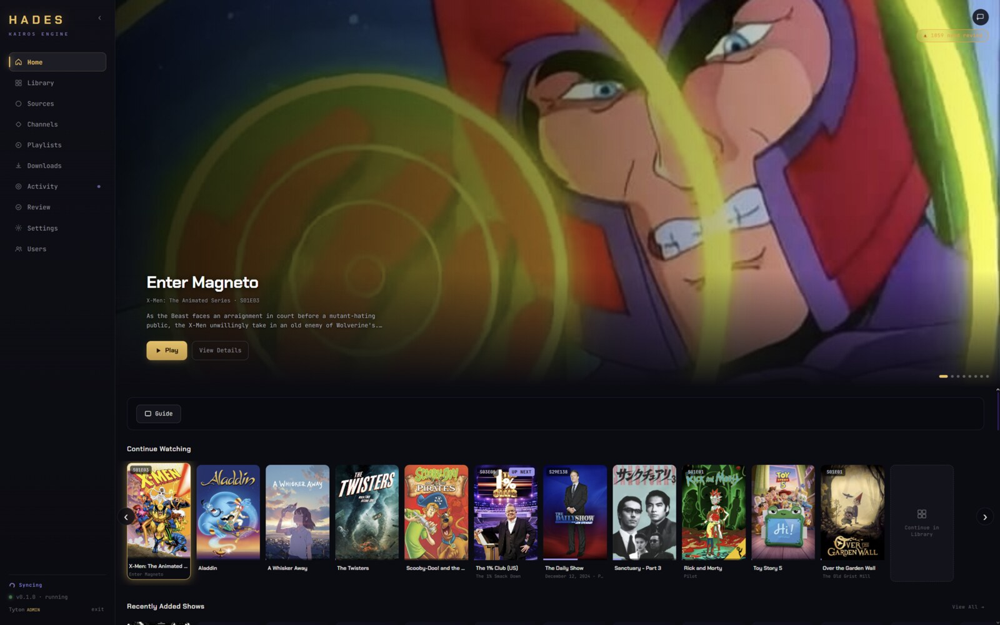
Hero carousel, Continue Watching, and library shelves — the same home screen that anchors both live channels and on-demand playback.
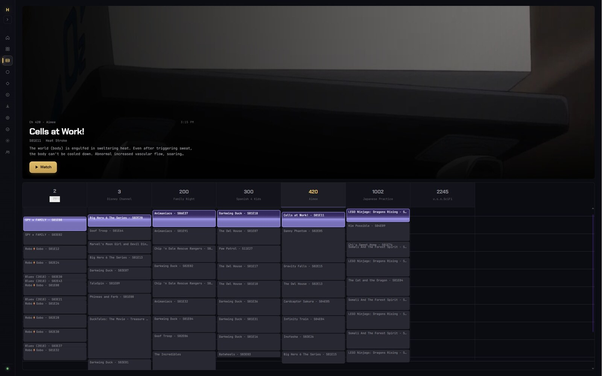
Guide is its own page now, with a synced-header channel grid and a live, progress-aware now-playing hero — pick anything airing right now and jump straight in.
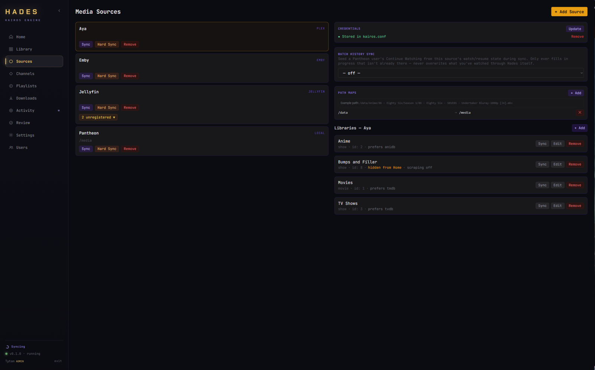
Plex, Jellyfin, Emby, and local folders side by side, each with its own libraries, watch-history sync, and path maps for deduplicating the same media across sources.
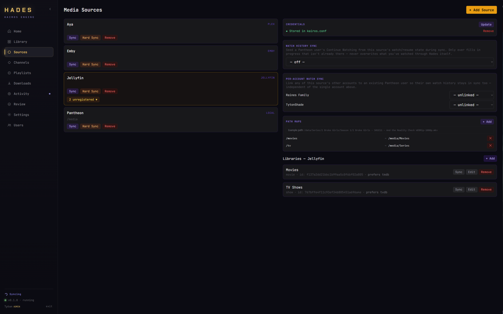
Link a source's other accounts to existing Pantheon users so the whole household's watch history stays in sync, independent of the main linked account.
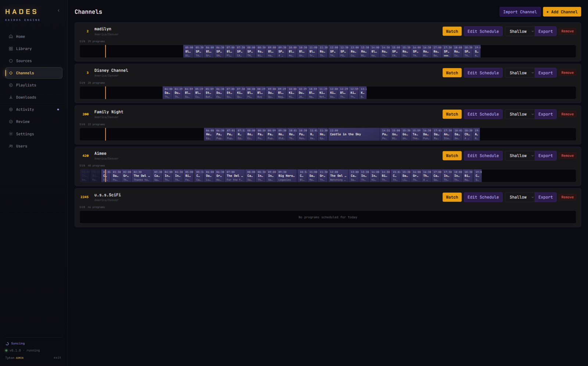
Every channel's schedule for today at a glance, with one click through to Watch, Edit Schedule, or an XMLTV/M3U export.
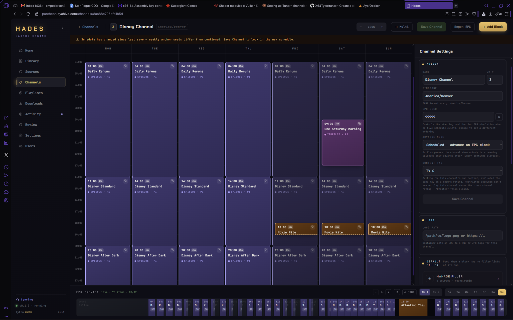
Zoom out to the whole week for a channel, with timezone, EPG seed, advance mode, and a content-rating ceiling that restricted accounts can't watch above.
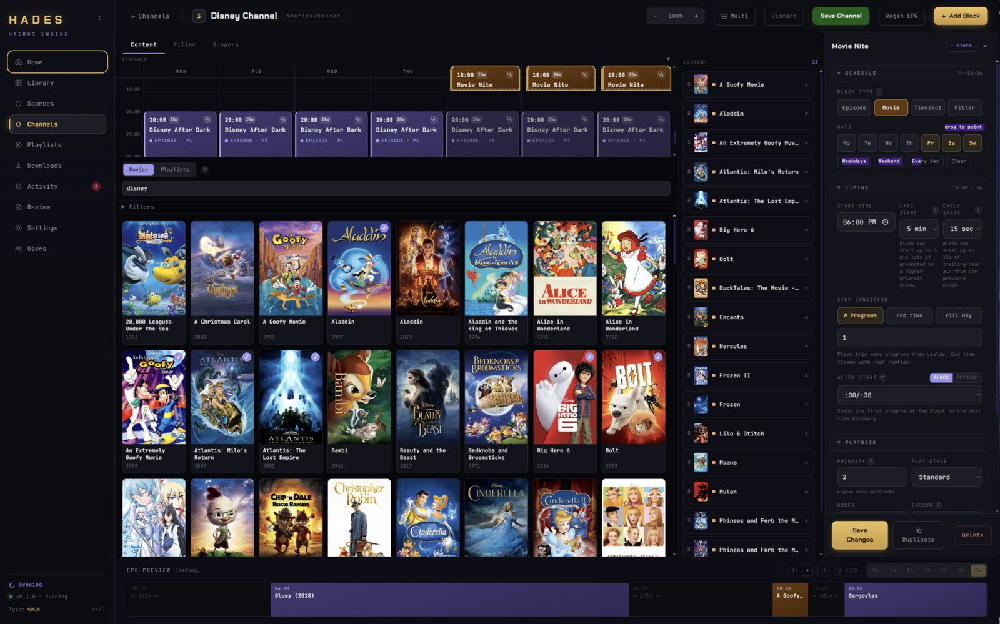
Paint a block across days, drop in a movie list or shuffle pool, and tune timing, stop conditions, and priority — the EPG preview at the bottom rebuilds live as you edit.
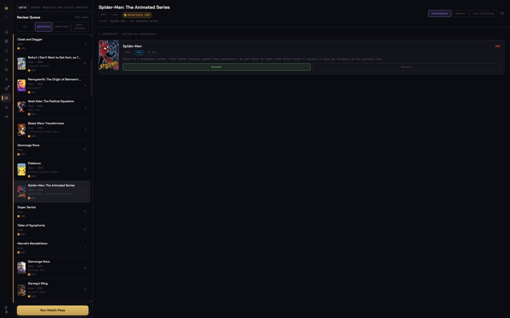
Uncertain scraper matches queue up here, sorted by confidence — compare candidate art, year, and synopsis, then accept or reject in one click.
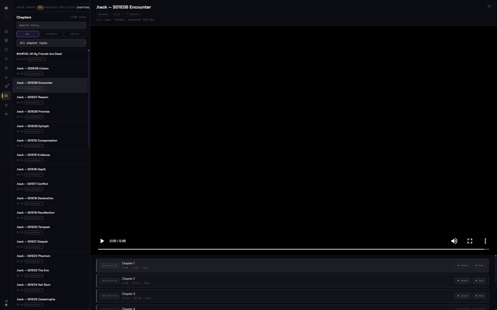
Visual QA for auto-detected chapters — intros, credits, recaps — checked against the actual video, frame-accurate to the second.
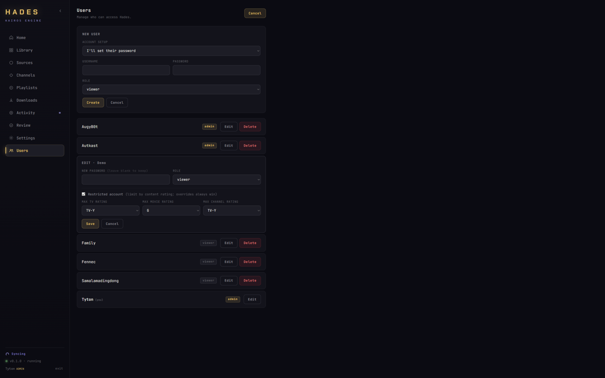
Create viewer accounts with independent max content ratings for TV, movies, and channels — restrictions that always win, even over an admin's channel settings.
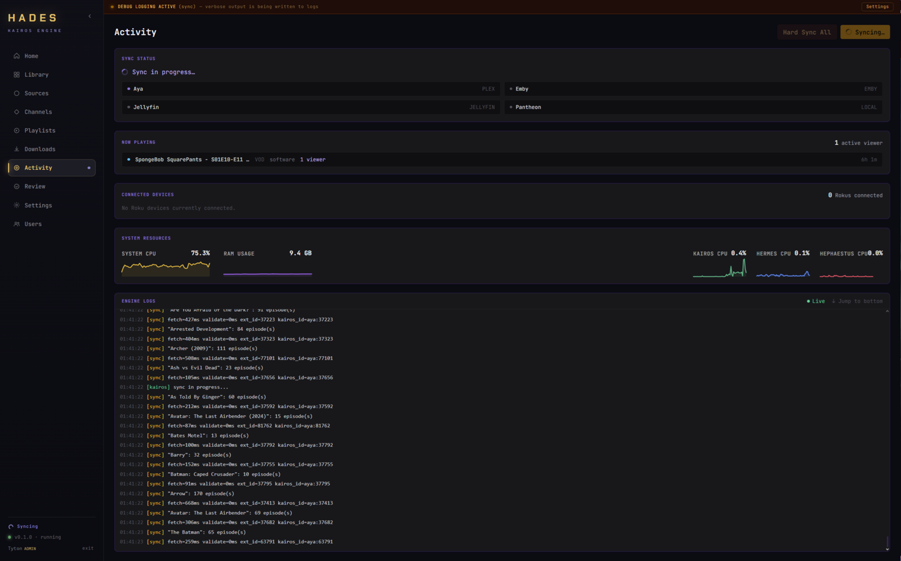
Real-time sync status per source, now-playing sessions, connected Roku devices, and CPU/RAM graphs for every engine — backed by a live-tailing log.